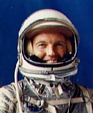

Gordon Cooper

Gordon Cooper was one of the best trained US astronauts having flown on Mercury 9 and Gemini 5. Yet he was not selected to fly
an Apollo mission. It is speculated that Cooper did not play the game correctly when it comes to the UFO situation. It is interesting that Cooper has developed an interest in ancient civilizations and in fact participated in an expedition to South American that discovered the remnants of a very old and advanced civilization dating back over 5000 years. One is tempted to ask why the sudden interest on the part of a former astronaut in "ancient astronaut" type endevours.
A fellow officer once said of Cooper. "We all knew where Gordon was going to end up in ten years. He was going to be Chairman of The Joint Chiefs of Staff. (what happened that he didn' ?)
In July 1960 Cooper was interviewed by Yvonne S. Durfield and had this to say about UFO's. "I don't take UFO's seriously. I would be very skeptical." In March 1978 Cooper stated to the National Enquirer "UFO's are definately real" It is interesting that his two flights into space occurred between the dates of the two interviews. Cooper went on to make a written statement to the United Nations supporting Grenada's Prime Minister Eric Gairy proposal that the UN establish a UFO agency.(1979 ?)
In his book MJ12 & THE RIDDLE OF HANGER 18 Beckley quotes Cooper as saying "UFO's are, I believe, very likely travellers from some other planet; visitors from some other world that is hundreds of thousands of years more advanced than we are, and they certainly have a far more efficient sytem of propulsion than we have."
During an interview on the Merv Griffin Show, Merv asked the following of Gordon Cooper. "There is a story going around, Gordon, that a spaceship did land in middle America and there were occupants, and members of our government were able to keep one of the occupants alive for some period of time. They've seen the metal of the aircraft and know what the people look like -- is that a credible story ? To everyones surprise Cooper answers with a straight face "I think it's fairly credible. I would like to see the time when all qualified people could really work together to properly investigate these stories and either refute or prove them." Later the next morning Lee Spiegel a UFO researcher and aquaintance of Cooper talked to Cooper on the phone. During this conversation Cooper admitted that he could have revealed further information on the Merv Griffin Show but did not because he did not want to raise too many official eyebrows.
From an interview with the National Enquirer on 14 Jan. 1997, with Gordon Cooper;
"I know other astronauts share my feelings," declared Cooper, 69, who went into space aboard a Mercury craft in 1963 and on a Gemini craft two years later. "And we know the government is sitting on hard evidence of UFOs !" Cooper said he first encountered UFOs as a military pilot in Germany in the early 1950s, when unidentified craft were spotted over an air base.
"We thought they could have been Russian we regularly had MiG-15s overflying our base. We scrambled our Sabre jets to intercept and got to our ceiling of 45,000 feet . . . and they were still way above us traveling faster than we were. These vehicles were in formation like a fighter group, but they were metallic silver and saucer-shaped. Believe me, they weren't like any MiGs I'd seen before ! They had to be UFOs."
In 1957, Cooper was one of an elite band of test pilots at Edwards Air Force Base in California, in charge of several advanced projects, including the installation of a precision landing system.
"I had a camera crew filming the installation when they spotted a saucer. They filmed it as it flew overhead, then hovered, extended three legs as landing gear, and slowly came down to land on a dry lake bed ! These guys were all pro cameramen, so the picture quality was very good. The camera crew managed to get within 20 or 30 yards of it, filming all the time. It was a classic saucer, shiny silver and smooth, about 30 feet across. It was pretty clear it was an alien craft. As they approached closer it took off."
When his camera crew handed over the film, Cooper followed standard procedure and contacted Washington to report the UFO and "all heck broke loose," he said. "After a while a high-ranking officer said when the film was developed I was to put it in a pouch and send it to Washington. He didn't say anything about me not looking at the film. That's what I did when it came back from the lab and it was all there just like the camera crew reported."
When the Air Force later started Operation Blue Book to collate UFO evidence and reports, Cooper says he mentioned the film evidence. "But the film was never found supposedly. Blue Book was strictly a cover-up anyway." Cooper revealed he's convinced an alien craft crashed at Roswell, N. Mex., in 1947 and aliens were discovered in the wreckage. "I had a good friend at Roswell, a fellow officer. He had to be careful about what he said. But it sure wasn't a weather balloon, like the Air Force cover story. He made it clear to me what crashed was a craft of alien origin, and members of the crew were recovered."
Why has the government kept its UFO secrets for so many years ? "It started in World War 2, when the government didn't want people to know about UFO reports in case they panicked," said Cooper. "They would have been fearful it was superior enemy technology that we had no defense against. Then it got worse in the Cold War for the same reason. So they told one untruth, they had to tell another to cover that one, then another, then another . . . it just snowballed. And right now I'm convinced a lot of very embarrassed government officials are sitting there in Washington trying to figure a way to bring the truth out. They know it's got to come out one day, and I'm sure it will.